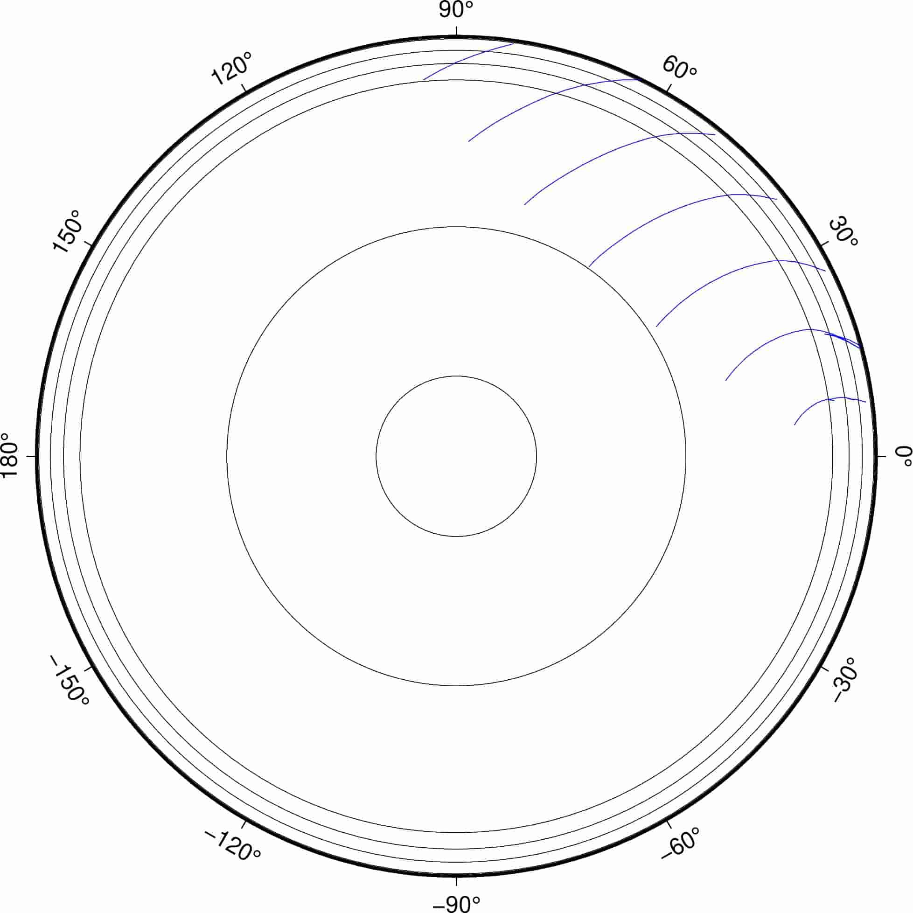
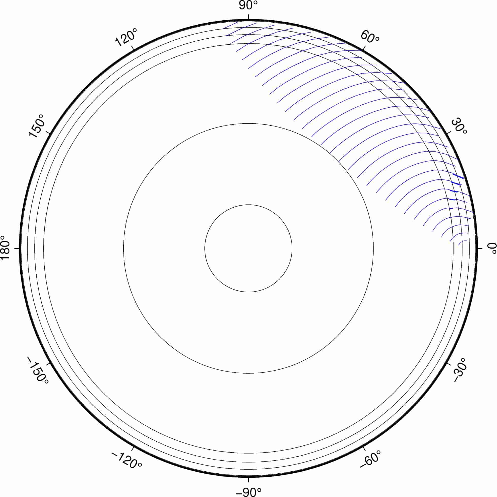

taup wavefront¶
taup wavefront 命令可用于生成波前面，即任意时刻地震波在地球内部的波场快照。
基本用法¶
使用 taup wavefront --help 可查询该命令的完整用法和选项。其选项与
taup time 几乎完全相同，故不再重复介绍。此处仅介绍常用用法。
计算震源深度为 300 km，震中距 60° 处，P 震相的波前面:
$ taup wavefront -ph P -deg 60 -h 300
该命令会生成文件 taup_wavefront.gmt，其包含了不同时刻（t=100, 200, 300, …）的
P 波的波前面信息，内容如下:
> P at 100.0 seconds
5.31 5151.8 100.00 254.331
5.42 5158.7 100.00 260.031
5.49 5163.9 100.00 264.250
5.55 5167.7 100.00 267.326
...(省略若干行)
> P at 200.0 seconds
15.69 4244.7 200.00 254.331
15.93 4267.0 200.00 260.031
16.10 4283.9 200.00 264.250
16.23 4296.4 200.00 267.326
...(省略若干行)
该文件包含四列，分别是：震中距（度）、深度（km）、走时（秒）、射线参数（秒/度）。可以直接使用文件的前两列进行绘图。
加上 --gmt 选项，则会生成一个绘制波前面的 GMT 脚本 taup_wavefront.gmt:
$ taup wavefront -ph P -deg 60 -h 300 --gmt
使用如下命令执行该绘图脚本，即可得到 PDF 格式的波前面传播图:
$ bash taup_wavefront.gmt
绘制出来的图件效果如下：
{kind=link}
进阶用法¶
taup wavefront 提供的 --rays 选项可以进一步控制生成波前面时所使用的射线数目（即每个波前面用多少个点约束），而 --timestep 选项可以控制波前面的时间步长（即间隔多长时间产生一个波前面）。
以下示例中，每个波前面用 20 条射线计算，且每 25 秒计算一个波前面:
$ taup wavefront -ph P -deg 60 -h 300 --rays 20 --timestep 25 --gmt
$ bash taup_wavefront.gmt
绘制出来的图件效果如下：
{kind=link}
波场动画¶
taup wavefront 提供的 --timefiles 选项可以将每个时刻的波前面信息输出到不同的文件中。有了每个时刻的波场信息，就可以制作波场动画了。
以下命令会生成几十个文件，每个文件包含一个波前面信息:
$ taup wavefront -ph P -deg 60 -h 300 --timestep 10 --timefiles
例如，taup_wavefront_025.gmt 包含了第 25 秒时的波前面信息。这些文件可用于制图，并进一步生成动画。
将 --timefiles 选项与 --gmt 选项连用，则会对每个波前面生成一个单独的 GMT 绘图脚本:
$ taup wavefront -ph P -deg 60 -h 300 --timestep 10 --timefiles --gmt
以上命令会生成几十个 GMT 脚本。使用如下命令可以批量执行所有 GMT 脚本，生成多个 PDF 文件:
$ for i in $(ls taup_wavefront_*.gmt); do bash $i; done
使用 GraphicsMagick 的 gm convert 命令可以将多个 PDF 文件转换为 GIF 动画:
$ gm convert -delay 10 -density 150x150 taup_wavefront_*.pdf taup_wavefront.gif
其中，-delay 10 表示每两张图的间隔是 10/100 秒，-density 150x150 设置动画的水平和垂直方向的像素点数。
生成的动画如下图所示：